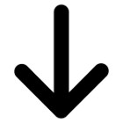

No seáis vagos.
Press ESC to enter the slide overview!
Cargamos las librerías y aplicaciones de manera independiente en nuestro index.html
<script type="text/javascript" src="ext-3.4.0/adapter/ext/ext-base.js"></script>
<script type="text/javascript" src="ext-3.4.0/ext-all-debug.js"></script>
<script type="text/javascript" src="ckeditor-3.6.1/ckeditor.js"></script>
...
... 25 carga de archivos más ...
...
<script type="text/javascript" src="js/tags.js"></script>
<script type="text/javascript" src="js/enlaces.js"></script>
<script type="text/javascript" src="js/vtypes.js"></script>
La carga de librerías y dependencias se realiza de manera dinámica dentro de nuestra aplicación.
El index.html queda así:
<script type="text/javascript" src="app/Application.js"></script>
En la aplicación (Application.js) tendremos esto:
Ext.Loader.setConfig(
{
enabled : true,
paths :
{
'Ext.ux' : '/hor/examples/ux',
'Ext.ux.uji' : '/hor/Ext/ux/uji',
}
});
Ext.require('Ext.data.proxy.Rest');
Ext.require('Ext.data.reader.Xml');
... Unas cuantas líneas más ...
Ext.require('Extensible.calendar.data.EventStore');
Ext.require('Extensible.calendar.CalendarPanel');